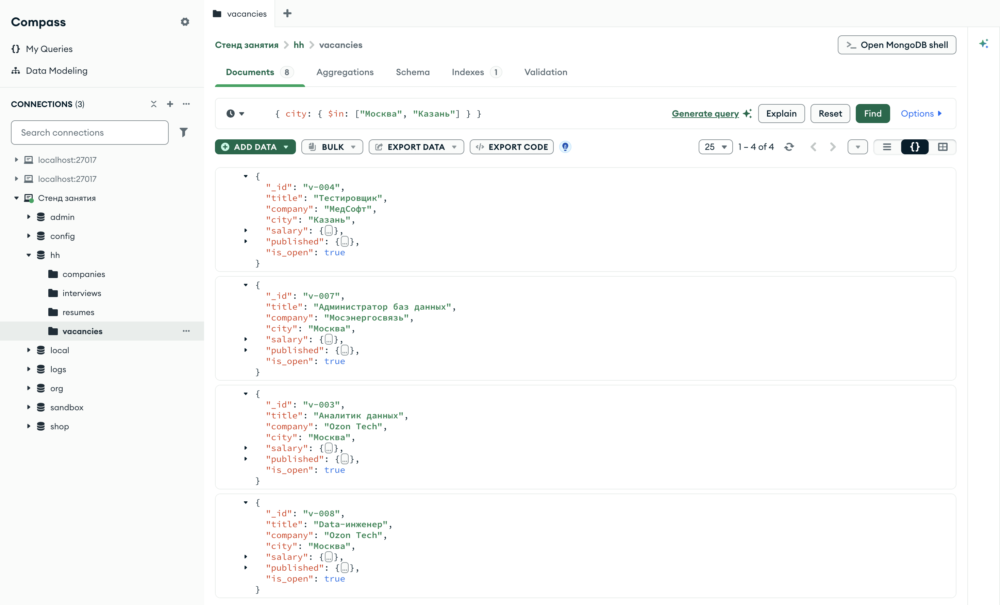
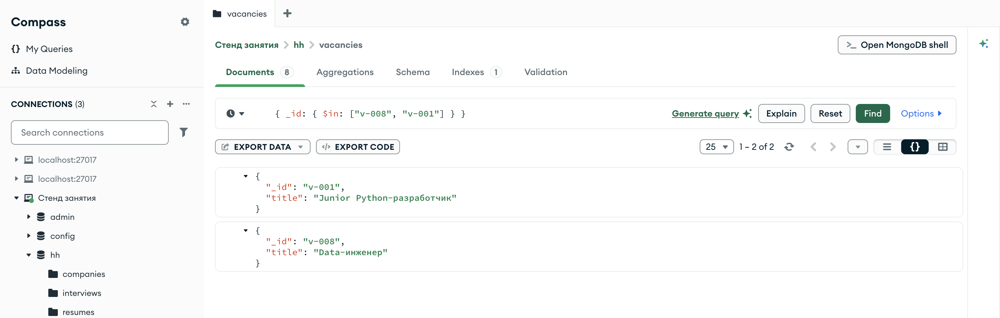
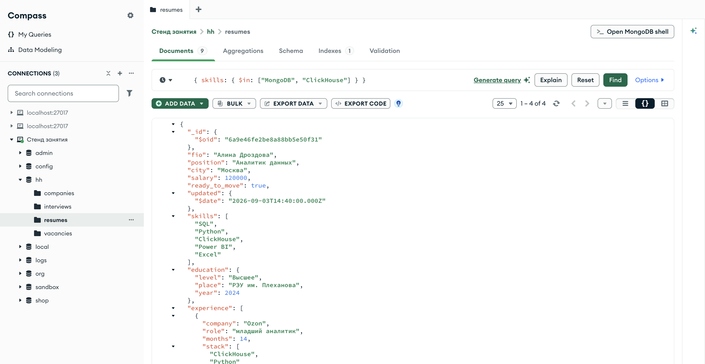
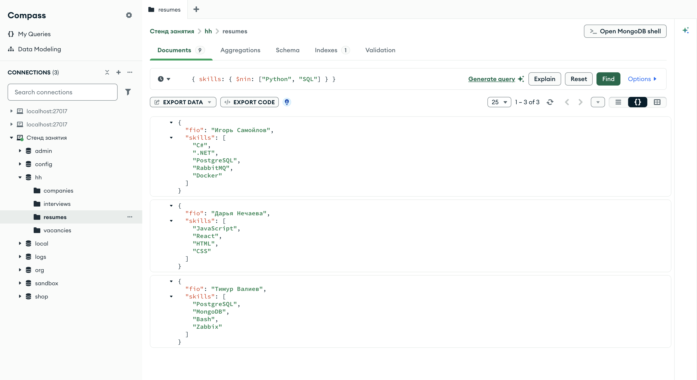
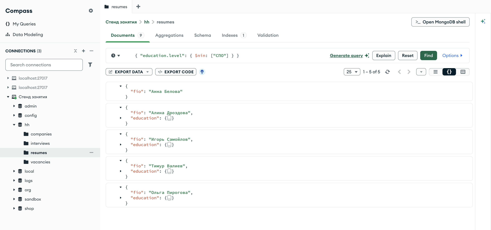
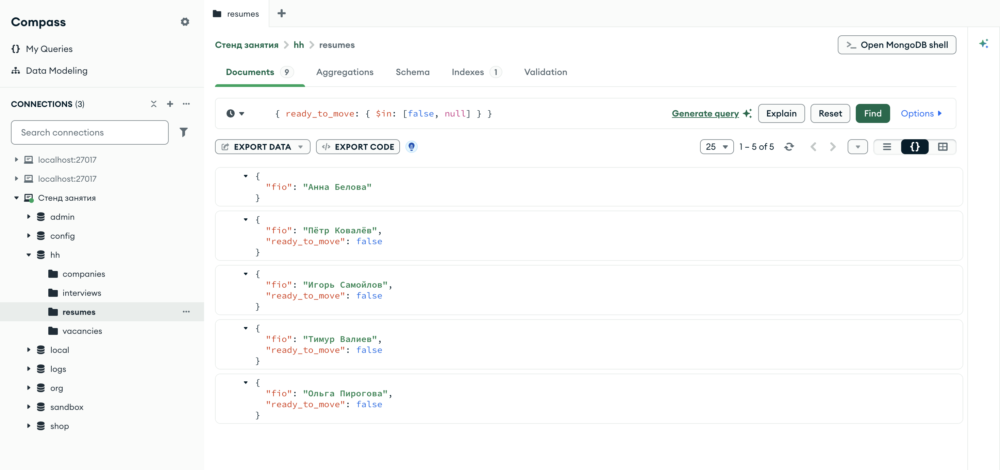
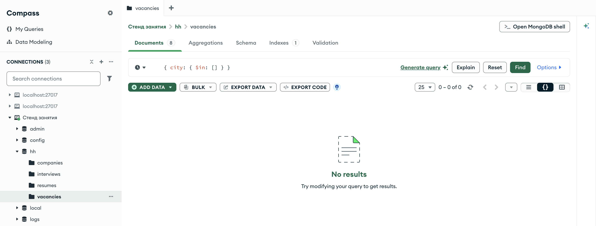

Справочник по MongoDB · модуль 2 · язык фильтров
2.3
Списки значений:
$in и $nin
В главе 2.1 было показано, что двумя парами с одним ключом, {"city": "Ярославль", "city": "Москва"}, нельзя отобрать документы из двух городов сразу. Здесь разобран оператор $in, который проверяет поле по списку допустимых значений, и обратный ему $nin. Отдельно — как оба оператора работают с полем-массивом, с отсутствующим полем и с пустым списком.
- Категория
- Язык запросов
- Уровень
- Начальный
- Связанные темы
- Операторы сравнения, логика
$or, массивы$all - Зачем это знать
- Отбирать документы по набору значений, выбранных пользователем
Как запускать примеры этой главы
mongodb-glava-2.3-python.zip, 60 КБmongodb-glava-2.3-ruby.zip, 60 КБmongodb-glava-2.3-go.zip, 66 КБmongodb-glava-2.3-cpp.zip, 64 КБ — все примеры главы готовыми программами, учебные базы и стенд в Docker. В README.md — запуск в Docker, если Compass нет или он не подключается, и на установленном сервере с Compass, а также что должна напечатать каждая программа.lessons/ch2_3.py — пример вставляется в конец файлаlessons/ch2_3.rb — пример вставляется в конец файлаlessons/ch2_3.go — пример внутрь скобок в конце main, функции и типы — выше mainlessons/ch2_3.cpp — пример внутрь скобок в конце main, функции — выше maincd lessons, затем python ch2_3.pycd lessons, затем python3 ch2_3.py · в Docker: docker compose run --rm python lessons/ch2_3.pycd lessons, затем ruby ch2_3.rb · в Docker: docker compose run --rm ruby lessons/ch2_3.rbcd lessons, затем go run ch2_3.go · в Docker: docker compose run --rm go lessons/ch2_3.gocd lessons, затем g++ -std=c++17 ch2_3.cpp -o prog $(pkg-config --cflags --libs libmongocxx1) && ./prog · в Docker: docker compose run --rm cpp lessons/ch2_3.cpp§1$in: одно из значений
Оператор $in принимает массив значений и отбирает документы, у которых значение поля совпадает хотя бы с одним элементом этого массива. Фильтр {"city": {"$in": ["Москва", "Казань"]}} читается так: город — Москва или Казань.
Совпадение внутри $in проверяется так же, как простое равенство из главы 2.1: по типу и значению, с учётом регистра. Список — обычный массив своего языка: список Python, массив Ruby, bson.A в Go, make_array в C++.
for doc in vacancies.find({"city": {"$in": ["Москва", "Казань"]}}, {"_id": 0, "title": 1, "city": 1}): print(doc)
mongocxx::options::find options; options.projection(make_document(kvp("_id", 0), kvp("title", 1), kvp("city", 1))); for (const auto& doc : vacancies.find(make_document(kvp("city", make_document(kvp("$in", make_array("Москва", "Казань"))))), options)) { std::cout << bsoncxx::to_json(doc, bsoncxx::ExtendedJsonMode::k_relaxed) << std::endl; }
cursor, _ := vacancies.Find(ctx, bson.D{{Key: "city", Value: bson.D{{Key: "$in", Value: bson.A{"Москва", "Казань"}}}}}, options.Find().SetProjection(bson.D{{Key: "_id", Value: 0}, {Key: "title", Value: 1}, {Key: "city", Value: 1}})) for cursor.Next(ctx) { var doc bson.D cursor.Decode(&doc) out, _ := bson.MarshalExtJSON(doc, false, false) fmt.Println(string(out)) }
vacancies.find({ "city" => { "$in" => ["Москва", "Казань"] } }, projection: { "_id" => 0, "title" => 1, "city" => 1 }) .each { |doc| puts doc.inspect }
{'title': 'Тестировщик', 'city': 'Казань'}
{'title': 'Администратор баз данных', 'city': 'Москва'}
{'title': 'Аналитик данных', 'city': 'Москва'}
{'title': 'Data-инженер', 'city': 'Москва'}
{ "title" : "Тестировщик", "city" : "Казань" }
{ "title" : "Администратор баз данных", "city" : "Москва" }
{ "title" : "Аналитик данных", "city" : "Москва" }
{ "title" : "Data-инженер", "city" : "Москва" }
{"title":"Тестировщик","city":"Казань"}
{"title":"Администратор баз данных","city":"Москва"}
{"title":"Аналитик данных","city":"Москва"}
{"title":"Data-инженер","city":"Москва"}
{"title"=>"Тестировщик", "city"=>"Казань"}
{"title"=>"Администратор баз данных", "city"=>"Москва"}
{"title"=>"Аналитик данных", "city"=>"Москва"}
{"title"=>"Data-инженер", "city"=>"Москва"}
Четыре вакансии: одна в Казани и три в Москве. То же условие можно записать через логическое «или» — оператор $or из главы 2.4. Когда все варианты относятся к одному полю, запись через $in короче: список значений стоит в одном месте.

hh.vacancies, фильтр { city: { $in: ["Москва", "Казань"] } } — те же четыре вакансии, что напечатала программаВкладка Documents подписана числом 8, счётчик над списком — 1 – 4 of 4. В документах видно поле city: у первого — Казань, у остальных — Москва. Вакансии идут в порядке коллекции, как и в выводе программы.
§2Порядок результата
Порядок значений в списке на порядок документов в результате не влияет. Сервер проверяет документы коллекции один за другим и отдаёт подходящие в том порядке, в каком их находит. Это учитывают, когда программа достаёт документы по списку ключей — например, по списку избранных вакансий пользователя.
for doc in vacancies.find({"_id": {"$in": ["v-008", "v-001"]}}, {"title": 1}): print(doc)
mongocxx::options::find options; options.projection(make_document(kvp("title", 1))); for (const auto& doc : vacancies.find(make_document(kvp("_id", make_document(kvp("$in", make_array("v-008", "v-001"))))), options)) { std::cout << bsoncxx::to_json(doc, bsoncxx::ExtendedJsonMode::k_relaxed) << std::endl; }
cursor, _ := vacancies.Find(ctx, bson.D{{Key: "_id", Value: bson.D{{Key: "$in", Value: bson.A{"v-008", "v-001"}}}}}, options.Find().SetProjection(bson.D{{Key: "title", Value: 1}})) for cursor.Next(ctx) { var doc bson.D cursor.Decode(&doc) out, _ := bson.MarshalExtJSON(doc, false, false) fmt.Println(string(out)) }
vacancies.find({ "_id" => { "$in" => ["v-008", "v-001"] } }, projection: { "title" => 1 }) .each { |doc| puts doc.inspect }
{'_id': 'v-001', 'title': 'Junior Python-разработчик'}
{'_id': 'v-008', 'title': 'Data-инженер'}
{ "_id" : "v-001", "title" : "Junior Python-разработчик" }
{ "_id" : "v-008", "title" : "Data-инженер" }
{"_id":"v-001","title":"Junior Python-разработчик"}
{"_id":"v-008","title":"Data-инженер"}
{"_id"=>"v-001", "title"=>"Junior Python-разработчик"}
{"_id"=>"v-008", "title"=>"Data-инженер"}
В списке первой стоит v-008, а в результате первой пришла v-001: в коллекции она лежит раньше. Проекция здесь содержит только title, и поле _id сервер добавил сам — так работает включающая проекция (глава 1.5). Если порядок списка важен, документы переставляют в программе после получения или задают сортировку по полю.

hh.vacancies, фильтр { _id: { $in: ["v-008", "v-001"] } } — порядок коллекцииВ фильтре первой стоит v-008, в списке Compass первой идёт v-001 — тот же порядок, что в выводе программы. Проекция { title: 1 } оставила название, а _id добавил сервер.
§3$in и поле-массив
Если поле — массив, условие проверяется на каждом элементе, как в главе 2.1 §6. Для $in это значит: документ подходит, если хотя бы один элемент массива совпал хотя бы с одним значением списка. Пример ищет резюме, где среди навыков есть MongoDB или ClickHouse.
for doc in resumes.find({"skills": {"$in": ["MongoDB", "ClickHouse"]}}, {"_id": 0, "fio": 1, "skills": 1}): print(doc)
mongocxx::options::find options; options.projection(make_document(kvp("_id", 0), kvp("fio", 1), kvp("skills", 1))); for (const auto& doc : resumes.find(make_document(kvp("skills", make_document(kvp("$in", make_array("MongoDB", "ClickHouse"))))), options)) { std::cout << bsoncxx::to_json(doc, bsoncxx::ExtendedJsonMode::k_relaxed) << std::endl; }
cursor, _ := resumes.Find(ctx, bson.D{{Key: "skills", Value: bson.D{{Key: "$in", Value: bson.A{"MongoDB", "ClickHouse"}}}}}, options.Find().SetProjection(bson.D{{Key: "_id", Value: 0}, {Key: "fio", Value: 1}, {Key: "skills", Value: 1}})) for cursor.Next(ctx) { var doc bson.D cursor.Decode(&doc) out, _ := bson.MarshalExtJSON(doc, false, false) fmt.Println(string(out)) }
resumes.find({ "skills" => { "$in" => ["MongoDB", "ClickHouse"] } }, projection: { "_id" => 0, "fio" => 1, "skills" => 1 }) .each { |doc| puts doc.inspect }
{'fio': 'Алина Дроздова', 'skills': ['SQL', 'Python', 'ClickHouse', 'Power BI', 'Excel']}
{'fio': 'Тимур Валиев', 'skills': ['PostgreSQL', 'MongoDB', 'Bash', 'Zabbix']}
{'fio': 'Марк Ефремов', 'skills': ['Python', 'FastAPI', 'MongoDB', 'Git']}
{'fio': 'Ольга Пирогова', 'skills': ['SQL', 'Excel', 'Python', 'ClickHouse']}
{ "fio" : "Алина Дроздова", "skills" : [ "SQL", "Python", "ClickHouse", "Power BI", "Excel" ] }
{ "fio" : "Тимур Валиев", "skills" : [ "PostgreSQL", "MongoDB", "Bash", "Zabbix" ] }
{ "fio" : "Марк Ефремов", "skills" : [ "Python", "FastAPI", "MongoDB", "Git" ] }
{ "fio" : "Ольга Пирогова", "skills" : [ "SQL", "Excel", "Python", "ClickHouse" ] }
{"fio":"Алина Дроздова","skills":["SQL","Python","ClickHouse","Power BI","Excel"]}
{"fio":"Тимур Валиев","skills":["PostgreSQL","MongoDB","Bash","Zabbix"]}
{"fio":"Марк Ефремов","skills":["Python","FastAPI","MongoDB","Git"]}
{"fio":"Ольга Пирогова","skills":["SQL","Excel","Python","ClickHouse"]}
{"fio"=>"Алина Дроздова", "skills"=>["SQL", "Python", "ClickHouse", "Power BI", "Excel"]}
{"fio"=>"Тимур Валиев", "skills"=>["PostgreSQL", "MongoDB", "Bash", "Zabbix"]}
{"fio"=>"Марк Ефремов", "skills"=>["Python", "FastAPI", "MongoDB", "Git"]}
{"fio"=>"Ольга Пирогова", "skills"=>["SQL", "Excel", "Python", "ClickHouse"]}
Четыре резюме. У Тимура Валиева и Марка Ефремова в навыках есть MongoDB, у Алины Дроздовой и Ольги Пироговой — ClickHouse. Одного совпадения достаточно; остальные навыки на результат не влияют. Условие «в резюме есть все навыки из списка» записывается другим оператором — $all, он разобран в главе 2.6.

hh.resumes, фильтр { skills: { $in: ["MongoDB", "ClickHouse"] } } — у первого резюме массив навыков раскрытУ Алины Дроздовой в массиве skills пять строк, и из списка фильтра среди них есть только "ClickHouse". Этого одного совпадения хватило, чтобы документ попал в результат. Счётчик 1 – 4 of 4 совпадает с выводом программы выше.
§4$nin: ни одного из значений
Оператор $nin — от not in — отбирает документы, у которых значение поля не совпадает ни с одним элементом списка. Для поля-массива условие строже: ни один элемент массива не должен совпасть ни с одним значением списка.
print("вакансии не в Москве и не в Ярославле:", vacancies.count_documents({"city": {"$nin": ["Москва", "Ярославль"]}})) for doc in resumes.find({"skills": {"$nin": ["Python", "SQL"]}}, {"_id": 0, "fio": 1, "skills": 1}): print(doc)
std::cout << "вакансии не в Москве и не в Ярославле: " << vacancies.count_documents(make_document(kvp("city", make_document(kvp("$nin", make_array("Москва", "Ярославль")))))) << std::endl; mongocxx::options::find options; options.projection(make_document(kvp("_id", 0), kvp("fio", 1), kvp("skills", 1))); for (const auto& doc : resumes.find(make_document(kvp("skills", make_document(kvp("$nin", make_array("Python", "SQL"))))), options)) { std::cout << bsoncxx::to_json(doc, bsoncxx::ExtendedJsonMode::k_relaxed) << std::endl; }
gorod, _ := vacancies.CountDocuments(ctx, bson.D{{Key: "city", Value: bson.D{{Key: "$nin", Value: bson.A{"Москва", "Ярославль"}}}}}) fmt.Println("вакансии не в Москве и не в Ярославле:", gorod) cursor, _ := resumes.Find(ctx, bson.D{{Key: "skills", Value: bson.D{{Key: "$nin", Value: bson.A{"Python", "SQL"}}}}}, options.Find().SetProjection(bson.D{{Key: "_id", Value: 0}, {Key: "fio", Value: 1}, {Key: "skills", Value: 1}})) for cursor.Next(ctx) { var doc bson.D cursor.Decode(&doc) out, _ := bson.MarshalExtJSON(doc, false, false) fmt.Println(string(out)) }
puts "вакансии не в Москве и не в Ярославле: " + vacancies.count_documents({ "city" => { "$nin" => ["Москва", "Ярославль"] } }).to_s resumes.find({ "skills" => { "$nin" => ["Python", "SQL"] } }, projection: { "_id" => 0, "fio" => 1, "skills" => 1 }) .each { |doc| puts doc.inspect }
вакансии не в Москве и не в Ярославле: 2
{'fio': 'Игорь Самойлов', 'skills': ['C#', '.NET', 'PostgreSQL', 'RabbitMQ', 'Docker']}
{'fio': 'Дарья Нечаева', 'skills': ['JavaScript', 'React', 'HTML', 'CSS']}
{'fio': 'Тимур Валиев', 'skills': ['PostgreSQL', 'MongoDB', 'Bash', 'Zabbix']}
вакансии не в Москве и не в Ярославле: 2
{ "fio" : "Игорь Самойлов", "skills" : [ "C#", ".NET", "PostgreSQL", "RabbitMQ", "Docker" ] }
{ "fio" : "Дарья Нечаева", "skills" : [ "JavaScript", "React", "HTML", "CSS" ] }
{ "fio" : "Тимур Валиев", "skills" : [ "PostgreSQL", "MongoDB", "Bash", "Zabbix" ] }
вакансии не в Москве и не в Ярославле: 2
{"fio":"Игорь Самойлов","skills":["C#",".NET","PostgreSQL","RabbitMQ","Docker"]}
{"fio":"Дарья Нечаева","skills":["JavaScript","React","HTML","CSS"]}
{"fio":"Тимур Валиев","skills":["PostgreSQL","MongoDB","Bash","Zabbix"]}
вакансии не в Москве и не в Ярославле: 2
{"fio"=>"Игорь Самойлов", "skills"=>["C#", ".NET", "PostgreSQL", "RabbitMQ", "Docker"]}
{"fio"=>"Дарья Нечаева", "skills"=>["JavaScript", "React", "HTML", "CSS"]}
{"fio"=>"Тимур Валиев", "skills"=>["PostgreSQL", "MongoDB", "Bash", "Zabbix"]}
Вакансий не в Москве и не в Ярославле две — в Казани и Санкт-Петербурге. Резюме без Python и без SQL три: в каждом из выведенных массивов нет ни одной из этих строк. Резюме, где есть хотя бы один из двух навыков, $nin исключил.

hh.resumes, фильтр { skills: { $nin: ["Python", "SQL"] } } — три резюме с раскрытыми навыкамиСчётчик 1 – 3 of 3. Массивы skills раскрыты целиком: ни в одном нет ни "Python", ни "SQL". Проекция оставляет ФИО и навыки.
§5$nin и отсутствующее поле
С отсутствующим полем $nin ведёт себя так же, как $ne из главы 2.2: документ без поля не совпадает ни с одним значением списка, и сервер его возвращает. В коллекции резюме уровень образования записан в поле education.level, и у одного резюме вложенного документа education нет вовсе.
print("education.level $nin [СПО]:", resumes.count_documents({"education.level": {"$nin": ["СПО"]}})) print("education.level Высшее: ", resumes.count_documents({"education.level": "Высшее"})) for doc in resumes.find({"education.level": {"$nin": ["СПО"]}}, {"_id": 0, "fio": 1, "education.level": 1}): print(doc)
std::cout << "education.level $nin [СПО]: " << resumes.count_documents(make_document(kvp("education.level", make_document(kvp("$nin", make_array("СПО")))))) << std::endl; std::cout << "education.level Высшее: " << resumes.count_documents(make_document(kvp("education.level", "Высшее"))) << std::endl; mongocxx::options::find options; options.projection(make_document(kvp("_id", 0), kvp("fio", 1), kvp("education.level", 1))); for (const auto& doc : resumes.find(make_document(kvp("education.level", make_document(kvp("$nin", make_array("СПО"))))), options)) { std::cout << bsoncxx::to_json(doc, bsoncxx::ExtendedJsonMode::k_relaxed) << std::endl; }
neSpo, _ := resumes.CountDocuments(ctx, bson.D{{Key: "education.level", Value: bson.D{{Key: "$nin", Value: bson.A{"СПО"}}}}}) vysshee, _ := resumes.CountDocuments(ctx, bson.D{{Key: "education.level", Value: "Высшее"}}) fmt.Println("education.level $nin [СПО]:", neSpo) fmt.Println("education.level Высшее: ", vysshee) cursor, _ := resumes.Find(ctx, bson.D{{Key: "education.level", Value: bson.D{{Key: "$nin", Value: bson.A{"СПО"}}}}}, options.Find().SetProjection(bson.D{{Key: "_id", Value: 0}, {Key: "fio", Value: 1}, {Key: "education.level", Value: 1}})) for cursor.Next(ctx) { var doc bson.D cursor.Decode(&doc) out, _ := bson.MarshalExtJSON(doc, false, false) fmt.Println(string(out)) }
puts "education.level $nin [СПО]: " + resumes.count_documents({ "education.level" => { "$nin" => ["СПО"] } }).to_s puts "education.level Высшее: " + resumes.count_documents({ "education.level" => "Высшее" }).to_s resumes.find({ "education.level" => { "$nin" => ["СПО"] } }, projection: { "_id" => 0, "fio" => 1, "education.level" => 1 }) .each { |doc| puts doc.inspect }
education.level $nin [СПО]: 5
education.level Высшее: 4
{'fio': 'Анна Белова'}
{'fio': 'Алина Дроздова', 'education': {'level': 'Высшее'}}
{'fio': 'Игорь Самойлов', 'education': {'level': 'Высшее'}}
{'fio': 'Тимур Валиев', 'education': {'level': 'Высшее'}}
{'fio': 'Ольга Пирогова', 'education': {'level': 'Высшее'}}
education.level $nin [СПО]: 5
education.level Высшее: 4
{ "fio" : "Анна Белова" }
{ "fio" : "Алина Дроздова", "education" : { "level" : "Высшее" } }
{ "fio" : "Игорь Самойлов", "education" : { "level" : "Высшее" } }
{ "fio" : "Тимур Валиев", "education" : { "level" : "Высшее" } }
{ "fio" : "Ольга Пирогова", "education" : { "level" : "Высшее" } }
education.level $nin [СПО]: 5
education.level Высшее: 4
{"fio":"Анна Белова"}
{"fio":"Алина Дроздова","education":{"level":"Высшее"}}
{"fio":"Игорь Самойлов","education":{"level":"Высшее"}}
{"fio":"Тимур Валиев","education":{"level":"Высшее"}}
{"fio":"Ольга Пирогова","education":{"level":"Высшее"}}
education.level $nin [СПО]: 5
education.level Высшее: 4
{"fio"=>"Анна Белова"}
{"fio"=>"Алина Дроздова", "education"=>{"level"=>"Высшее"}}
{"fio"=>"Игорь Самойлов", "education"=>{"level"=>"Высшее"}}
{"fio"=>"Тимур Валиев", "education"=>{"level"=>"Высшее"}}
{"fio"=>"Ольга Пирогова", "education"=>{"level"=>"Высшее"}}
Условие «уровень не СПО» дало пять резюме, условие «уровень — высшее» — четыре. Пятое резюме — Анны Беловой: в выводе у него только ФИО, потому что поля education в документе нет, и проекции нечего было показать. Если задача — найти соискателей с высшим образованием, её записывают равенством; $nin подходит, когда документы без поля тоже нужны.

hh.resumes, фильтр { "education.level": { $nin: ["СПО"] } } — первое резюме без поля educationУ четырёх документов после ФИО стоит свёрнутый education, у первого — Анны Беловой — только ФИО: вложенного документа нет, и $nin его пропустил. Счётчик 1 – 5 of 5.
§6null в списке
Условие равенства с null — {"ready_to_move": null} — отбирает документы, где поле равно null, и документы, где поля нет. Для сервера отсутствующее поле при сравнении с null считается равным ему. Внутри $in значение null работает так же.
print("ready_to_move null: ", resumes.count_documents({"ready_to_move": None})) print("ready_to_move $in [false, null]:", resumes.count_documents({"ready_to_move": {"$in": [False, None]}}))
std::cout << "ready_to_move null: " << resumes.count_documents(make_document(kvp("ready_to_move", bsoncxx::types::b_null{}))) << std::endl; std::cout << "ready_to_move $in [false, null]: " << resumes.count_documents(make_document(kvp("ready_to_move", make_document(kvp("$in", make_array(false, bsoncxx::types::b_null{})))))) << std::endl;
pusto, _ := resumes.CountDocuments(ctx, bson.D{{Key: "ready_to_move", Value: nil}}) netIliPusto, _ := resumes.CountDocuments(ctx, bson.D{{Key: "ready_to_move", Value: bson.D{{Key: "$in", Value: bson.A{false, nil}}}}}) fmt.Println("ready_to_move null: ", pusto) fmt.Println("ready_to_move $in [false, null]:", netIliPusto)
puts "ready_to_move null: " + resumes.count_documents({ "ready_to_move" => nil }).to_s puts "ready_to_move $in [false, null]: " + resumes.count_documents({ "ready_to_move" => { "$in" => [false, nil] } }).to_s
ready_to_move null: 1 ready_to_move $in [false, null]: 5
ready_to_move null: 1 ready_to_move $in [false, null]: 5
ready_to_move null: 1 ready_to_move $in [false, null]: 5
ready_to_move null: 1 ready_to_move $in [false, null]: 5
Поля ready_to_move нет в одном резюме, и равенство с null его нашло. Условие $in: [false, null] читается «ответ „нет“ или ответа нет» и даёт те же пять резюме, что $ne: true в главе 2.2. Разница в записи: здесь оба допустимых случая перечислены явно. Отличить поле со значением null от отсутствующего поля позволяют операторы $exists и $type из главы 2.5.

hh.resumes, фильтр { ready_to_move: { $in: [false, null] } } — ответ «нет» или ответа нетПервый документ — без поля ready_to_move, у остальных четырёх оно равно false. Счётчик 1 – 5 of 5, как у $ne: true в главе 2.2.
§7Пустой список
Список для $in часто собирает программа — например, из городов, которые пользователь отметил в форме поиска. Если пользователь не отметил ни одного города, список окажется пустым.
print("$in []: ", vacancies.count_documents({"city": {"$in": []}})) print("$nin []:", vacancies.count_documents({"city": {"$nin": []}}))
std::cout << "$in []: " << vacancies.count_documents(make_document(kvp("city", make_document(kvp("$in", make_array()))))) << std::endl; std::cout << "$nin []: " << vacancies.count_documents(make_document(kvp("city", make_document(kvp("$nin", make_array()))))) << std::endl;
vSpiske, _ := vacancies.CountDocuments(ctx, bson.D{{Key: "city", Value: bson.D{{Key: "$in", Value: bson.A{}}}}}) neVSpiske, _ := vacancies.CountDocuments(ctx, bson.D{{Key: "city", Value: bson.D{{Key: "$nin", Value: bson.A{}}}}}) fmt.Println("$in []: ", vSpiske) fmt.Println("$nin []:", neVSpiske)
puts "$in []: " + vacancies.count_documents({ "city" => { "$in" => [] } }).to_s puts "$nin []: " + vacancies.count_documents({ "city" => { "$nin" => [] } }).to_s
$in []: 0 $nin []: 8
$in []: 0 $nin []: 8
$in []: 0 $nin []: 8
$in []: 0 $nin []: 8
С пустым списком $in не находит ничего: нет значения, с которым поле могло бы совпасть. $nin с пустым списком находит все восемь вакансий: исключать нечего. Для формы поиска обычно нужно третье поведение — «город не выбран, значит, город не важен». Его получают в программе: если список пустой, условие на город в фильтр не добавляют совсем.

hh.vacancies, фильтр { city: { $in: [] } } — пустой результат без ошибкиCompass выполнил запрос без предупреждения и показал No results, хотя вкладка Documents подписана числом 8. Так же пустой список выглядит и в программе: ошибки нет, документов нет.
§8Списки в Compass
Кадры в разделах выше сняты в Compass на тех же запросах, что и примеры. Список значений в поле фильтра пишется в квадратных скобках, как массив в JSON: { city: { $in: ["Москва", "Казань"] } }. Пустой список записывается как [], значение null — словом null без кавычек.
§9Частые ошибки
| Что написано | Что происходит | Как правильно |
|---|---|---|
{"city": {"$in": "Москва"}} | Ошибка сервера: $in needs an array | {"$in": ["Москва"]} |
{"skills": ["Python", "SQL"]} | Пусто: массив в фильтре сравнивается с полем целиком, вместе с порядком элементов | {"$in": ["Python", "SQL"]} |
{"education.level": {"$nin": ["СПО"]}} | Кроме «Высшее» находит документ, в котором поля нет | Равенство "Высшее"; отсутствующее поле — глава 2.5 |
Результат ожидается в порядке списка $in | Документы идут в порядке коллекции | sort или упорядочить в программе |
Список для $in собран из формы, и пользователь ничего не выбрал | $in с пустым списком не находит ничего, $nin — находит всё | Проверить пустой выбор до запроса и не добавлять условие |
| Что написано | Что происходит | Как правильно |
|---|---|---|
make_document(kvp("city", make_document(kvp("$in", "Москва")))) | Ошибка сервера: $in needs an array | make_document(kvp("$in", make_array("Москва"))) |
make_document(kvp("skills", make_array("Python", "SQL"))) | Пусто: массив в фильтре сравнивается с полем целиком, вместе с порядком элементов | make_document(kvp("$in", make_array("Python", "SQL"))) |
make_document(kvp("education.level", make_document(kvp("$nin", make_array("СПО"))))) | Кроме «Высшее» находит документ, в котором поля нет | Равенство "Высшее"; отсутствующее поле — глава 2.5 |
Результат ожидается в порядке списка $in | Документы идут в порядке коллекции | sort или упорядочить в программе |
Список для $in собран из формы, и пользователь ничего не выбрал | $in с пустым списком не находит ничего, $nin — находит всё | Проверить пустой выбор до запроса и не добавлять условие |
| Что написано | Что происходит | Как правильно |
|---|---|---|
bson.D{{Key: "city", Value: bson.D{{Key: "$in", Value: "Москва"}}}} | Ошибка сервера: $in needs an array | bson.D{{Key: "$in", Value: bson.A{"Москва"}}} |
bson.D{{Key: "skills", Value: bson.A{"Python", "SQL"}}} | Пусто: массив в фильтре сравнивается с полем целиком, вместе с порядком элементов | bson.D{{Key: "$in", Value: bson.A{"Python", "SQL"}}} |
bson.D{{Key: "education.level", Value: bson.D{{Key: "$nin", Value: bson.A{"СПО"}}}}} | Кроме «Высшее» находит документ, в котором поля нет | Равенство "Высшее"; отсутствующее поле — глава 2.5 |
Результат ожидается в порядке списка $in | Документы идут в порядке коллекции | sort или упорядочить в программе |
Список для $in собран из формы, и пользователь ничего не выбрал | $in с пустым списком не находит ничего, $nin — находит всё | Проверить пустой выбор до запроса и не добавлять условие |
| Что написано | Что происходит | Как правильно |
|---|---|---|
{ "city" => { "$in" => "Москва" } } | Ошибка сервера: $in needs an array | { "$in" => ["Москва"] } |
{ "skills" => ["Python", "SQL"] } | Пусто: массив в фильтре сравнивается с полем целиком, вместе с порядком элементов | { "$in" => ["Python", "SQL"] } |
{ "education.level" => { "$nin" => ["СПО"] } } | Кроме «Высшее» находит документ, в котором поля нет | Равенство "Высшее"; отсутствующее поле — глава 2.5 |
Результат ожидается в порядке списка $in | Документы идут в порядке коллекции | sort или упорядочить в программе |
Список для $in собран из формы, и пользователь ничего не выбрал | $in с пустым списком не находит ничего, $nin — находит всё | Проверить пустой выбор до запроса и не добавлять условие |
§10Проверьте себя
Чем {"city": {"$in": ["Москва", "Казань"]}} отличается от {"city": "Москва", "city": "Казань"}?
Первый фильтр отбирает документы, где город — один из двух. Во втором ключ повторён: в Python и Ruby останется только последняя пара, и фильтр найдёт вакансии в Казани; в Go и C++ оба условия уйдут на сервер и соединятся по «и», и результат будет пустым.
В каком порядке придут документы по фильтру {"_id": {"$in": ["v-008", "v-001"]}}?
В порядке коллекции: сначала v-001, потом v-008. Порядок значений в списке $in на порядок результата не влияет.
Какие резюме отберёт {"skills": {"$in": ["MongoDB", "ClickHouse"]}}?
Те, где в массиве навыков есть хотя бы один из двух: MongoDB или ClickHouse. Резюме с обоими навыками тоже подходит. В учебной базе таких резюме четыре.
Почему {"education.level": {"$nin": ["СПО"]}} нашёл пять резюме, а соискателей с высшим образованием четыре?
В одном резюме нет вложенного документа education. Отсутствующее поле не совпадает ни с одним значением списка, и $nin этот документ возвращает.
Что вернёт $in с пустым списком?
Ни одного документа: совпадать не с чем. $nin с пустым списком, наоборот, вернёт все документы. Если список собирается из выбора пользователя, пустой выбор обрабатывают в программе: условие на это поле в фильтр не добавляют.
§11Шпаргалка
{"city": {"$in": ["Москва", "Казань"]}}
{"_id": {"$in": ["v-001", "v-008"]}}
{"skills": {"$in": ["MongoDB", "ClickHouse"]}}
{"city": {"$nin": ["Москва", "Ярославль"]}}
{"ready_to_move": {"$in": [False, None]}}
make_document(kvp("city", make_document(kvp("$in", make_array("Москва", "Казань")))))
make_document(kvp("_id", make_document(kvp("$in", make_array("v-001", "v-008")))))
make_document(kvp("skills", make_document(kvp("$in", make_array("MongoDB", "ClickHouse")))))
make_document(kvp("city", make_document(kvp("$nin", make_array("Москва", "Ярославль")))))
make_document(kvp("ready_to_move", make_document(kvp("$in", make_array(false, bsoncxx::types::b_null{})))))
bson.D{{Key: "city", Value: bson.D{{Key: "$in", Value: bson.A{"Москва", "Казань"}}}}}
bson.D{{Key: "_id", Value: bson.D{{Key: "$in", Value: bson.A{"v-001", "v-008"}}}}}
bson.D{{Key: "skills", Value: bson.D{{Key: "$in", Value: bson.A{"MongoDB", "ClickHouse"}}}}}
bson.D{{Key: "city", Value: bson.D{{Key: "$nin", Value: bson.A{"Москва", "Ярославль"}}}}}
bson.D{{Key: "ready_to_move", Value: bson.D{{Key: "$in", Value: bson.A{false, nil}}}}}
{ "city" => { "$in" => ["Москва", "Казань"] } }
{ "_id" => { "$in" => ["v-001", "v-008"] } }
{ "skills" => { "$in" => ["MongoDB", "ClickHouse"] } }
{ "city" => { "$nin" => ["Москва", "Ярославль"] } }
{ "ready_to_move" => { "$in" => [false, nil] } }
Итог главы
$in отбирает документы, у которых значение поля совпадает с одним из элементов списка, $nin — с которыми не совпадает ни один. Для поля-массива $in требует хотя бы одного совпадения среди элементов, $nin — ни одного. Порядок списка на порядок результата не влияет. $nin, как и $ne, возвращает документы без поля, а null в списке совпадает и с null, и с отсутствующим полем. Пустой список в $in не находит ничего, в $nin — находит всё. Следующая глава — о логических операторах, которые соединяют условия на разных полях: $and, $or, $not, $nor.